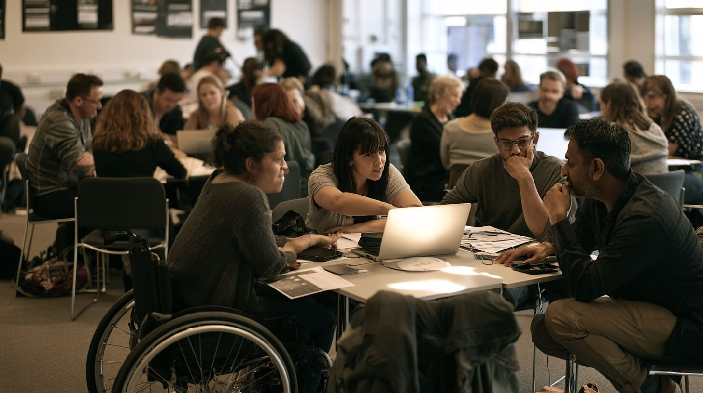

The capstone brings the whole day together: communication tailoring, team types, wellbeing, meeting discipline, structured frameworks and the human-centred workflow — applied in teams to one deliberately complex case. Success is process, not perfection.
Reactions to change vary with past experience, confidence, workload and sense of control. Recognising the patterns lets you tailor communication and support — and gives your LLM the context it needs to help meaningfully.
A practical model for guiding individuals through change: find whether the blocker is awareness, desire, knowledge, ability or reinforcement — then adjust communication or support.
A proven sequence for organisation-wide change — and a grounded framework that makes your LLM's suggestions follow known good practice instead of ad-hoc ideas.
A medium-sized hospital network — three campuses, 1,200 clinical staff — has had payroll discrepancies for nine months. Error rates exceed 7%; overtime allocation is inconsistent; staff report underpayment, overpayment and uncertainty; unions have raised formal concerns. Leadership is rolling out Chronos, a digital timekeeping and rostering system, targeting 30% payroll-variance reduction in three months. The timeline is ambitious, consultation has been limited, the system has known gaps, and trust is fragile. This is not only a systems change — it's a behavioural and cultural transformation affecting pay, workload, fairness, safety, trust and industrial relations.
CASE: Hospital workforce and timekeeping reform. A medium-sized hospital network (three campuses, 1,200 clinical staff) has had payroll discrepancies for nine months; error rates exceed 7%; overtime allocation is inconsistent; staff report underpayment, overpayment and uncertainty about entitlements; unions have raised formal concerns. Leadership is rolling out Chronos, a digital timekeeping and rostering system, targeting a 30% payroll-variance reduction within three months. The timeline is ambitious, consultation limited, the system has known configuration gaps, staff trust is fragile. This is a behavioural and cultural transformation affecting pay, workload, fairness, safety, trust and industrial relations — not only a systems change. STAKEHOLDERS: Marianne, Nurse Unit Manager — safe staffing/ratios; believes Chronos doesn't reflect ward complexity; concerned about patient impact. James, Junior Nurse — new; data-entry mistakes from fatigue; fears underpayment; unsure how the system works. Claire, Union Rep — fairness, entitlements, consultation; worried about accuracy; requests guarantees on data use. Victor, Finance Analyst — wants reliable data; concerned about budget exposure and audit findings. Sameer, IT Systems Lead — owns configuration; knows the build is incomplete; under timeline pressure. Leila, Workforce Planner — needs accurate data; sees opportunity; fears rushed adoption creates new errors. INDUSTRIAL RELATIONS: three active unions with different consultation clauses; fragile trust from historical failures. Concerns: overtime categories (call-backs, shift extensions) may be misclassified; blended roles crossing award categories may lose pay; timestamps may be used for performance critique; training hours not in staffing allocations; some ward roster rules don't match applied award conditions. A previous payroll failure at another state hospital fuels caution and emotion. SYSTEM LIMITATIONS: rostering templates misaligned with specialised ward patterns including double coverage; not mobile-optimised though clinicians move between locations; automated overtime triggers misread breaks/micro-shifts (over- and under-counts); part-time shift-extension award rules applied inconsistently. BEHAVIOURS: late-entered paper approvals in high-pressure wards; casual staff with multiple profiles causing duplication; nurses delaying overtime logging from guilt, fear of rejection or team pressure. FINANCIALS: overtime is 12% of staffing expenditure vs 8% benchmark; underpayments damaged trust; overpayments create budget exposure; executive concerns include audit findings, legal liability for misclassification, burnout and clinical safety, and poor planning data. GOAL: design a transformation response that stabilises accuracy and confidence.
Up to five teams, each owning one component through its own framework lens. AI may support analysis, option generation and structure — but verify every insight and rewrite it in your own tone. Each output combines later into a single transformation blueprint. Timebox: produce a shareable first version, then spend the final minutes tightening language and checking internal consistency.
Discuss the outputs in your team and improve the final product — with human knowledge added, the sum of your teamwork should beat the LLM's unthinking analysis.

To bring it together: give the LLM a structure for the final output, have representatives from each team check the fidelity of their inputs in the combined result, and iterate — humans working the outputs, LLMs interrogating them through risk lenses and frameworks as before.
Combine the team outputs below into one coherent transformation blueprint using exactly this structure: 1. Context and current state 2. Barriers and root causes 3. Change sequence 4. Operational stabilisation 5. Communication and adoption 6. Roadmap, risks and measures Use only the content provided. Where team outputs contradict each other, list the contradiction explicitly rather than resolving it silently.
Delivery pathways: FTF — each team emails their text to the facilitator (simplest and most reliable), who pastes into a master document, merges with the LLM and projects it. Alternatives: QR-code upload folder or a shared doc. Online — each team pastes output into the meeting chat labelled clearly ("Team C — ADKAR section"); facilitator combines, formats and screen-shares. If outputs hit chat word limits, AI can shorten them first.